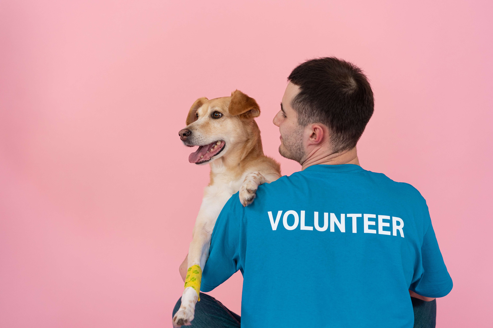

(1) (2).jpg)
Nos évènements
Week-end adoption

Comme chaque année Pattes & Co en association avec le refuge Mirlo organise les 14 et 15 Juin prochains une journée spéciale adoption. Près de 300 chiens et chats, seront présentés à l’adoption durant ce week-end. Jeunes, adultes et senior seront au rendez-vous prêt à être adoptés. Tous vaccinés, tatoués et stérilisés en attente d'une nouvelle famille. En plus de l'adoption des activités diverses seront organisées tout au long de la journée pour les plus petits comme les plus grands.